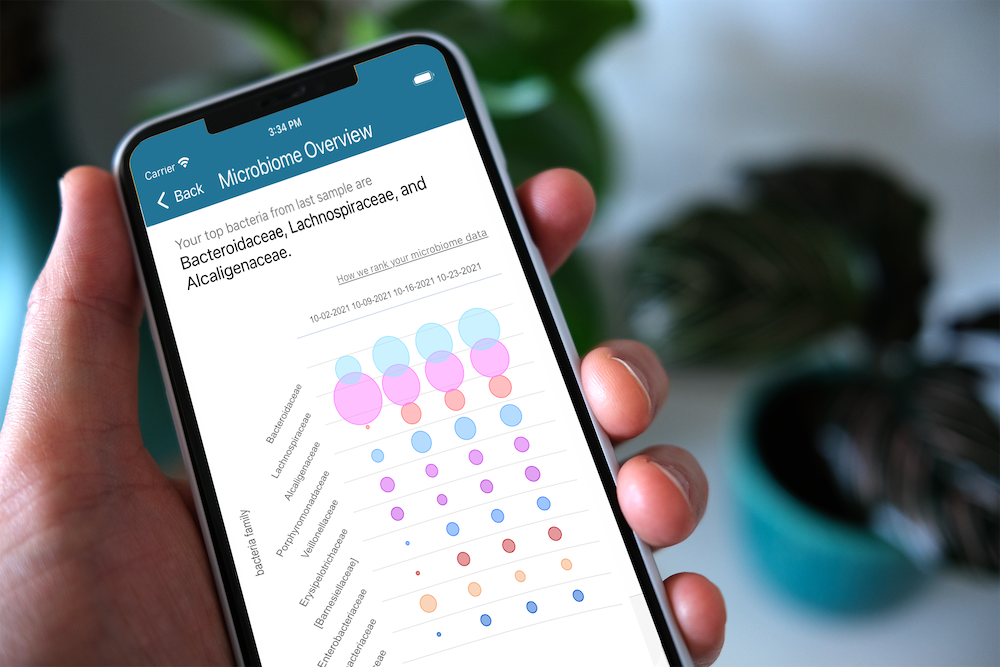

RESPONSIBILITES
Full-stack dev + visualization
ABOUT
Inflammatory bowel disease (IBD) is an unpredictable and sometimes debilitating condition with few treatment options. We developed the IBD mobile app in collaboration with MIT’s Center for Microbiome Informatics and Therapeutics to actively engage IBD sufferers with an intuitive and friendly user interface for logging and later viewing their symptoms and diet. This app will be part of a longitudinal study to improve the health of 3 million Americans with IBD and countless affected worldwide.